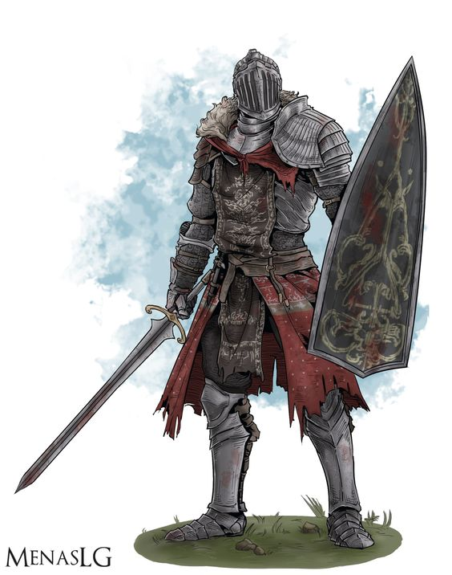

Uma humana em sua armadura de placas empunha seu escudo antes de ir ao encontro de um bando de goblins.
Um elfo atrás dela, em seu corselete de couro batido, salpica os goblins com flechas atiradas de seu primoroso arco.
O meio-orc próximo, dá ordens visando coordenar os ataques dos dois combatentes para obter a melhor vantagem.
Um anão em sua cota de malha coloca seu escudo entre à clava de um ogro e seu companheiro, direcionando o ataque mortal para o outro lado.
Seu companheiro, um meio-elfo em sua brunea, brande suas duas cimitarras em um turbilhão de golpes,
rodeando o ogro a procura de um ponto fraco em suas defesas. Um gladiador luta por esporte em uma arena, um mestre
com seu tridente e rede, hábil em prender os inimigos e arrastá-los para delírio da plateia – e sua própria vantagem tática.
A espada de seu oponente lampeja com um brilho azul um instante antes de um relâmpago atingi-lo pelas costas.
Todos esses heróis são guerreiros, talvez a mais diversificada classe de personagens nos mundos de DUNGEONS & DRAGONS.
Cavaleiros em missões, lordes conquistadores, campeões reais, infantaria de elite, mercenários rígidos e bandidos reis,
como guerreiros, eles compartilham de uma maestria com armas e armaduras sem precedentes, bem como um vasto conhecimento
e habilidades em combate. E eles estão bem familiarizados com a morte, seja simplesmente conhecendo-a ou desafiando-a cara a cara.
ESPECIALISTAS BEM-SUPRIDOS
Guerreiros aprendem o básico de todos os estilos de combate.
Todo guerreiro sabe brandir um machado, esgrimir com uma rapieira, empunhar uma espada longa ou uma espada grande,
usar um arco ou mesmo prender inimigos em uma rede com algum grau de perícia. Da mesma forma, um guerreiro sabe usar
escudos e qualquer tipo de armadura. Além do conhecimento básico, cada guerreiro se especializa em certo estilo de combate.
Alguns se concentram na arquearia, outros em lutar com duas armas ao mesmo tempo e ainda existem aqueles que
aprimoram suas habilidades marciais com magia. Essas combinações de ampla capacidade generalista e uma vasta especialização
tornam os guerreiros combatentes superiores nos campos de batalha e masmorras.
TREINADO PARA O PERIGO
Nem todo membro da patrulha da cidade, da milícia ou do exército da rainha é um guerreiro.
Muitos deles são soldados relativamente treinados somente com o básico do conhecimento de combate.
Soldados veteranos, oficiais militares, guarda-costas treinados, cavaleiros dedicados e figuras similares são guerreiros.
Alguns guerreiros são compelidos a usar seu treinamento como aventureiros. Explorar masmorras, matar monstros e outros trabalhos perigosos,
comuns a aventureiros, são uma segunda natureza para o guerreiro, não tão diferente da vida que ele ou ela deixou para trás.
Talvez existam grandes riscos, mas também grandes recompensas – poucos guerreiros na patrulha da cidade têm a oportunidade de descobrir
a espada mágica língua flamejante, por exemplo.
CRIANDO UM GUERREIRO
Conforme você constrói o seu guerreiro, é importante pensar em dois elementos relativos à história do seu personagem:
onde você conseguiu seu treinamento em combate e o que o diferencia dos outros guerreiros ao seu redor?
Você era de alguma forma cruel? Conseguiu uma ajuda extra de um mentor, talvez por sua excepcional dedicação?
O que o trouxe para esse tipo de treinamento em primeiro lugar? Uma ameaça à sua terra natal, sede de vingança,
uma necessidade de provar a si mesmo, podem ser todos esses motivos. Você pode ter aproveitado um treinamento formal no exército real
ou em uma milícia local. Talvez você tenha treinado na academia de guerra, aprendendo estratégias, táticas e história militar.
Ou ainda pode ter sido um autodidata – rude, mas bem testado. Você escolheu o caminho da espada como uma fuga da vida na fazenda
ou para seguir uma orgulhosa tradição familiar? Onde obteve suas armas e armaduras? Elas podem ser de uso militar ou uma herança
de família, talvez você economizou por muitos anos para comprá-las. Seus armamentos são agora suas posses mais importantes
– as únicas coisas que estão entre você e o abraço da morte.
Fonte: Vertente Geek